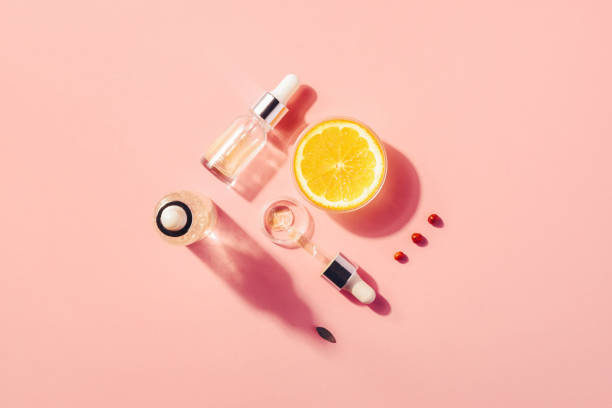
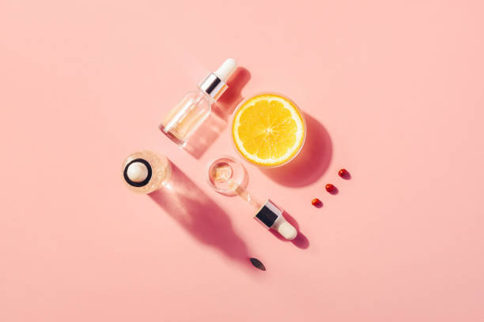

As melhores ssências que você merece!
A fragrância é a arte da perfumaria e é construída com intuito de perfumar.
Cada componente que será aplicada interfere diretamente em sua criação.
Elas possuem uma estrutura baseada na volatilidade de cada ingrediente chamada “pirâmide olfativa”,
sendo compostas por notas de saída, notas de corpo e notas de fundo,
esta estrutura garante que a fragrância tenha uma evolução olfativa agradável em todos os estágios de uso do produto e durante todo o tempo.
A fragrância que você escolher terá o impacto que você desejar!
 Vitamiana C
A vitamina C é antioxidante e protege dos radicais livres que somos bombardeados a todo momento
Com a nossa vitamina C você tem total qualidade em execussão.

Protetor Solar
O protetor solar atua como medicina preventiva a fim de proteger as camadas da pele contra a radiação ultravioleta.
“O uso do protetor solar facial atua de forma preventiva, mas também é como um tratamento,
eu até comento que ele deveria ser considerado um medicamento.
A gente precisa lembrar que as radiações UVA e UVB possuem uma intensidade constante durante todo o ano,
então tanto inverno quanto verão elas penetram profundamente na pele.
O protetor solar facial é capaz de prevenir a ação desses raios”, fala a dermatologista.
Vitamiana C
A vitamina C é antioxidante e protege dos radicais livres que somos bombardeados a todo momento
Com a nossa vitamina C você tem total qualidade em execussão.

Protetor Solar
O protetor solar atua como medicina preventiva a fim de proteger as camadas da pele contra a radiação ultravioleta.
“O uso do protetor solar facial atua de forma preventiva, mas também é como um tratamento,
eu até comento que ele deveria ser considerado um medicamento.
A gente precisa lembrar que as radiações UVA e UVB possuem uma intensidade constante durante todo o ano,
então tanto inverno quanto verão elas penetram profundamente na pele.
O protetor solar facial é capaz de prevenir a ação desses raios”, fala a dermatologista.
 Esses são os passos que não podem faltar na sua rotina diária,
você pode estar incluindo outros produtos na sua rotina de autocuidado, porém esses são fundamentais.
Esses são os passos que não podem faltar na sua rotina diária,
você pode estar incluindo outros produtos na sua rotina de autocuidado, porém esses são fundamentais.